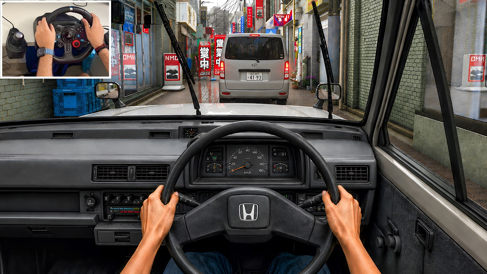
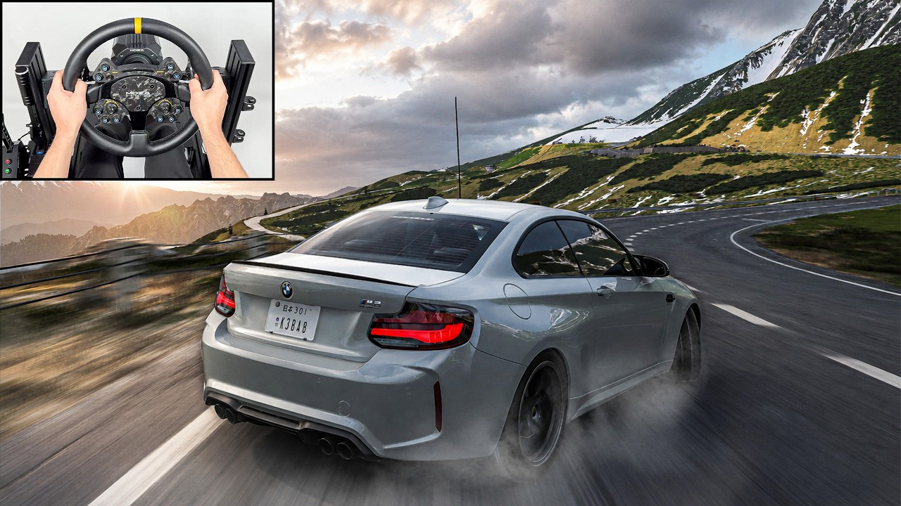

3
赛道类型
12
推荐路线
3
视频教程
A~S1
适用等级
📍Tokyo Expressway
高架环形赛道，多层结构，最快圈速1:45（S1级车辆）。
城市 · 中等难度📍Osaka Bay Circuit
港口区域临时赛道，路面较宽，适合新手练习。
城市 · 入门📍Shibuya Sprint
繁华街区短程冲刺，2.1km，包含3个90度弯角。
城市 · 冲刺🚗推荐车辆
优先选择AWD性能车（如GT-R、Supra），城市弯道需要稳定牵引力。
A~S1 Class
城市竞速视频教程

Tokyo Expressway
🏔️Hakone Turn 7
日本最 iconic 的山路弯道之一，收紧半径hairpin。建议前驱/S1车辆。
山路 · 高难度🏔️Mt. Tsukuba Climb
6km上山路段，掉头弯和长距离加速交替。建议A~S1级漂移调校。
山路 · 中等难度🏔️Izu Peninsula Coast
沿海山路，弯道密但半径较大，适合中级玩家练习。
山路 · 入门🚗推荐车辆
AE86/Silvia/S2000都是经典touge战车。400hp左右最佳，不要超过600hp。
RWD · A~S1 Class
山路漂移教程

Hakone Pass
⏱️Hakone Sprint
5.2km完整上山路，从山底到第5驿站。最快单圈2:12（S1车辆）。
计时 · 中等⏱️Tokyo City Circuit
高速公路环形一圈，4.8km，高速弯为主。最快单圈1:38（S2车辆）。
计时 · 中等⏱️Fuji Speedway
官方赛道，4.2km，多弯高速。需要S1~S2级调校。
计时 · 高难度🚗推荐车辆
S2级hypercar是计时赛首选，700+hp才能打破记录。
S1~S2 Class计时赛教程

Fuji Speedway
🗺️最佳路线规划
从Tokyo出发 → Hakone山路 → Lake Kawaguchiko → Fuji Speedway，全程约120km。
推荐路线🗺️快速旅行点
解锁所有Festival Site后，快速旅行可覆盖90%赛道入口。
效率提示